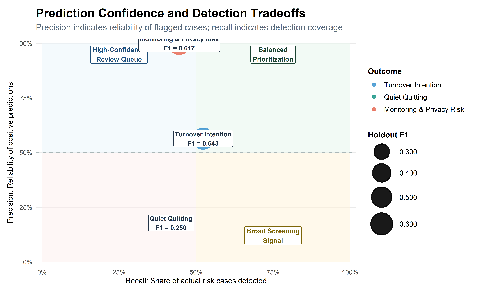

Executive Insights: Workforce Risk Modeling Results
This section synthesizes the final modeling results across turnover intention, quiet quitting, and monitoring-related turnover risk, translating model performance into executive-level workforce insights, governance guidance, and practical HR action priorities.
Executive Summary
This final section synthesizes the full workforce analytics pipeline, moving from exploratory analysis and predictive modeling into executive-level interpretation. Across the three modeling tracks, the project evaluates employee turnover intention, quiet quitting risk, and monitoring-related turnover risk using a consistent modeling framework.
The results show that workforce risk is not one-dimensional. Turnover risk, disengagement risk, and monitoring-related risk each require a different interpretation because the strongest model, holdout behavior, and business use case vary by outcome.
Across the portfolio, the strongest holdout model was Random Forest + SMOTE for Monitoring & Privacy Risk, with a holdout F1 Score of 0.617. The highest precision result was Random Forest + SMOTE for Monitoring & Privacy Risk, indicating the strongest reliability among flagged cases.
The main business takeaway is that these models should be used as risk prioritization tools, not automated decision systems. Their value is in helping HR, leadership, and governance teams focus attention earlier, identify patterns across workforce signals, and guide more targeted human review.
Portfolio-Level Modeling Results
The final modeling results provide a portfolio-level view of how each workforce risk outcome performed after model development, cross-validation, and holdout confirmation.
Rather than comparing the outcomes as if they represent the same type of problem, the table below summarizes each selected model in context. Turnover intention, quiet quitting, and monitoring-related turnover risk differ in signal strength, business sensitivity, and practical use.
| Final Selected Models Across Workforce Outcomes | |||||||||
| Cross-validated selection with holdout performance confirmation | |||||||||
| Outcome | Selected Model | Sampling Strategy | Selection Strategy | CV F1 | Accuracy | Precision | Recall | F1 | ROC AUC |
|---|---|---|---|---|---|---|---|---|---|
| Turnover Intention | Random Forest | Down Sampling | Holdout-Stable Risk Prioritization | 0.472 | 0.453 | 0.495 | 0.413 | 0.450 | 0.456 |
| Quiet Quitting | SVM | Down Sampling | Holdout-Viable Risk Prioritization | 0.707 | 0.224 | 0.216 | 1.000 | 0.355 | 0.500 |
| Monitoring & Privacy Risk | Random Forest | SMOTE | Holdout-Stable Risk Prioritization | 0.918 | 0.846 | 1.000 | 0.446 | 0.617 | 0.724 |
Final Model Comparison

The portfolio comparison shows that monitoring-related turnover risk produced the strongest overall holdout profile, especially in precision and F1 Score. This suggests the monitoring/privacy model is the most reliable for identifying a focused review queue.
Turnover intention produced moderate but usable holdout performance, making it appropriate for retention-risk prioritization rather than definitive classification. Quiet quitting showed weaker transfer from cross-validation to holdout performance, meaning it should be interpreted more cautiously as an early-warning engagement screen.
Prediction Confidence & Practical Use

This view highlights why each model should be used differently. A model with high precision is useful for building a focused review queue because flagged employees are more likely to represent meaningful risk. A model with high recall is useful for broad screening because it captures more potential cases, but it may also generate more false positives.
The monitoring/privacy model is the strongest candidate for confident prioritization. The turnover model is useful for balanced retention-risk screening. The quiet quitting model should be treated as a cautious engagement signal that may require additional survey, manager, or qualitative context before action is taken.
Risk Segmentation Across Outcomes
| Practical Use Profile by Workforce Risk Outcome | |||
| How each selected model should be interpreted in decision-making | |||
| Outcome | Selected Configuration | Practical Profile | Recommended Use |
|---|---|---|---|
| Turnover Intention | Random Forest + Down Sampling | Balanced prioritization signal | Use for retention-risk prioritization and targeted manager/HR review. |
| Quiet Quitting | SVM + Down Sampling | Broad screening signal | Use as an early engagement-risk signal supported by survey and manager context. |
| Monitoring & Privacy Risk | Random Forest + SMOTE | High-confidence review queue | Use for privacy, trust, and monitoring-governance review prioritization. |
Cross-Model Workforce Patterns
The modeling results point to a common theme across the project: workforce risk is rarely caused by a single variable. Instead, risk appears to emerge from overlapping behavioral, organizational, and employee-experience signals.
The three outcomes represent different forms of workforce vulnerability:
- Turnover intention reflects potential exit risk.
- Quiet quitting reflects potential disengagement while remaining employed.
- Monitoring-related turnover risk reflects workforce trust and privacy pressure connected to surveillance or monitoring practices.
Together, these outcomes show that employee risk should be interpreted as a portfolio of signals rather than a single prediction.
Outcome-Specific Risk Differences
Although the models share common workforce themes, each outcome requires a different business response.
Turnover intention is most useful for identifying employees who may require retention conversations, manager follow-up, or workload review. Quiet quitting is more ambiguous because disengagement can be behavioral, emotional, or contextual, making it better suited for engagement monitoring than direct intervention. Monitoring/privacy risk is the clearest governance signal because it connects workforce risk to privacy, trust, surveillance, and policy design.
Strategic Workforce Recommendations
The modeling results support a practical executive strategy: use predictive outputs to prioritize attention, then combine those signals with human context, qualitative information, and organizational judgment.
The recommendations below translate the modeling results into workforce action areas.
| Strategic Workforce Recommendations | ||
| Translating model outputs into executive action | ||
| Risk Area | Primary Model Signal | Recommended Action |
|---|---|---|
| Retention Risk | Turnover intention model | Use risk scores to prioritize retention conversations, manager check-ins, workload review, and career-development discussions. |
| Quiet Quitting / Engagement Risk | Quiet quitting model | Treat predictions as early engagement signals. Pair model output with pulse surveys, manager observations, role clarity review, and discretionary-effort indicators. |
| Monitoring & Privacy Risk | Monitoring/privacy model | Use flagged cases and segments to guide monitoring governance review, privacy communication, trust-building, and proportionality checks. |
| Workforce Planning | All models | Compare risk patterns across departments, roles, tenure groups, and work arrangements to identify structural workforce pressure points. |
| Leadership Decision Support | All models | Use model outputs to focus executive attention, not to automate employment decisions or replace manager/HR judgment. |
Responsible Use & Governance
Because these models deal with workforce risk, responsible use is central to the project. The models should support better questions, earlier review, and more consistent prioritization. They should not be used as automated decision systems.
The strongest governance principle is simple: model outputs should inform human review, not replace it.
What the Models Can Do
These models can help organizations:
- Identify where workforce risk may be concentrated
- Compare risk patterns across outcomes
- Prioritize HR, manager, or governance review
- Support earlier intervention before risk becomes visible through turnover or complaints
- Create a repeatable analytics framework for workforce decision support
What the Models Should Not Do
These models should not be used to:
- Make automatic employment decisions
- Label employees as problems or flight risks without context
- Replace manager judgment, HR review, or employee voice
- Justify surveillance expansion without governance review
- Treat synthetic-data results as direct evidence from a real organization
Human-in-the-Loop Decision Guidance
| Human-in-the-Loop Governance Framework | ||
| How model outputs should be reviewed before action | ||
| Decision Point | Model Role | Human Review Requirement |
|---|---|---|
| Employee flagged as high risk | Prioritizes the case for review | HR or manager reviews context, recent changes, workload, and employee feedback before action. |
| Department shows elevated risk | Identifies a possible structural pattern | Leadership reviews staffing, workload, management practices, and local climate indicators. |
| Monitoring/privacy risk increases | Signals possible trust or governance concern | Privacy, HR, and leadership review monitoring practices, transparency, and proportionality. |
| Quiet quitting risk appears elevated | Provides an early engagement signal | Managers validate through conversations, engagement surveys, role clarity, and support needs. |
| Model performance shifts over time | Indicates possible drift | Analytics team reviews data quality, feature behavior, class balance, and model recalibration needs. |
Executive Action Roadmap
The roadmap below organizes the findings into practical next steps. The goal is to move from model results to an actionable workforce analytics operating rhythm.
| Executive Action Roadmap | ||
| Moving from model results to responsible workforce action | ||
| Timeline | Action | Expected_Value |
|---|---|---|
| Immediate Actions | Use the final model summaries to identify which workforce risks are strongest, weakest, and most actionable. | Creates a clear executive understanding of what each model can and cannot support. |
| Immediate Actions | Review high-risk monitoring/privacy segments with HR, privacy, and governance stakeholders. | Focuses attention on the strongest model signal and most sensitive workforce domain. |
| 30–60 Day Actions | Build a recurring workforce risk dashboard that tracks turnover, engagement, monitoring/privacy, and wellbeing indicators. | Turns one-time modeling results into a repeatable decision-support process. |
| 30–60 Day Actions | Pair model outputs with qualitative review, pulse surveys, manager feedback, and policy context. | Improves interpretation and reduces the risk of acting on model output alone. |
| Long-Term Strategy | Develop governance standards for workforce analytics, including review cadence, model monitoring, privacy safeguards, and documentation. | Creates a sustainable, responsible analytics framework for HR decision-making. |
| Long-Term Strategy | Recalibrate models as new data becomes available and compare performance across employee groups and organizational contexts. | Improves model reliability, fairness, and long-term business value. |
Final Takeaway
This project demonstrates how synthetic HR data can support a realistic workforce analytics pipeline, from data preparation and exploratory analysis to predictive modeling and executive decision support.
The strongest insight is not that one model solves workforce risk. Instead, the results show that different workforce outcomes require different model interpretations. Turnover intention is useful for retention-risk prioritization, quiet quitting is best treated as an early engagement signal, and monitoring/privacy risk provides the clearest governance-focused review signal.
Used responsibly, this framework helps organizations move from reactive reporting to proactive workforce intelligence. The models do not replace human judgment; they help leaders ask better questions, prioritize attention, and respond earlier to patterns that may affect retention, engagement, trust, and organizational effectiveness.